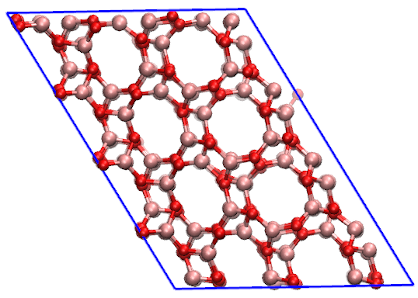
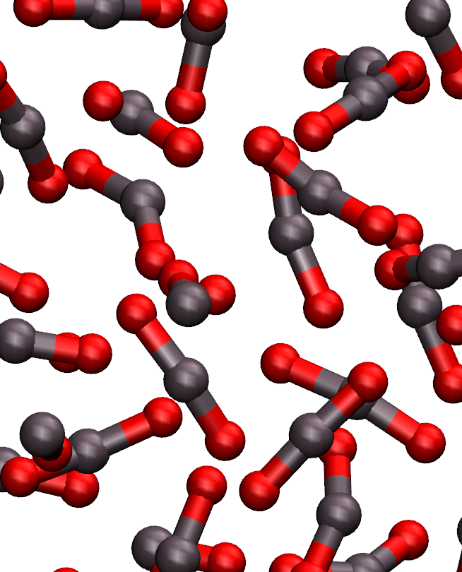

Current position: Post-Doc @ IMPMC, Sorbonne Université
B2O3 polymorphism under pressure and effect of He inclusion

The aim of this goal was to study the behavior and transformations of liquid B2O3 under high pressure.
Mainly, we aimed at understanding the experimental formation of a boroxol-rich glass[1] (boroxol rings being six members rings composed of alternating B and O atoms) instead of a crystal phase.
Interestingly, theoretical predictions have struggled to reproduce the boroxol fraction observed in experiments, especially using pair potentials[2].
In order to overcome those limitations, we used a polarizable force field,
which had been developped previously thanks to a collaboration with M. Salanne (PHENIX,
Sorbonne Université) and M. Micoulaut (LPMTC, Sorbonne Université) by A. Baroni in order to
reproduce the stability of the boroxol rings
that could not be achieved with simple pair potentials[1], consequentely we used simulation softwares developped in the PHENIX lab of Sorbonne University
such as PIMAIM and MetalWalls. In addition, we used enhanced sampling
methods and collective variables (Permutation Invariant Variable) developped withing the laboratory by F.
Pietrucci, in order to accelerate the transformations from structures to structures.
The first part of the project was a long-term molecular dynamics simulation of quenches at the lowest quenching rate
accessible with polarizable force field (2 Kelvin/ns) starting from 2000 Kelvin with the objective to reach the lowest temperature possible. We ran simulations
in both NPT and NVT ensemble, and with two different densities in the latter case.
The second part of the project consisted in using metadynamics to accelerate the exploration of structure
of structure starting from liquid and cristalline phase in order to obtain good theoretical candidate for the glass structures.
We made use of collective variable developped within IMPMC that allowed exploration and navigation of the water phase diagram.
Finally, we provided a theoretical counterpart to experiments that suggests that the nobel gas used as pressure medium in high pressure experiments may actually
penetrate the B2O3 lattice and impact its properties (as is the case in SiO2 glasses). To do so, we used a combination of simple molecular dynamics simulation
with random He inclusion in the lattice on the one hand to study their impact on the thermodynamical properties metadynamics exploration to analyze how those inclusion impact the structural properties of the
lattice.
You can read more about of the project here.
Supervisor: Guillaume Ferlat
Collaborators: Mathieu Salanne (PHENIX, Sorbonne Université), Fabio Pietrucci (IMPMC, Sorbonne Université)

Ph.D student in Material Science
CO2 under extreme conditions: liquids, crystal glasses and their transformations from ab initio topological methods
Supervisors: Marco Saitta, Fabio Pietrucci
Institut de Minéralogie, Physique des Matériaux et de Cosmochimie (IMPMC), Sorbonne Université, Paris, France
During my thesis I studied carbon dioxide under the extreme conditions of
the lower mantle of Earth. The main objective was to provide a better understanding
of the phenomenom of polymerization of the molecular liquid that was observed in 2012
by Boates et al.
In order to do so, we first used ab initio molecular dynamics
In order to do so, we first used ab initio molecular dynamics
To learn more, click here.
Master 2: Condensed matter (SMNO), Sorbonne University, Paris, France
Master 1: Erasmus exchange at Uppsala University, Uppsala, Sweden
Bachelor's degree in Physics - Fundamental of physics, Université Pierre et Marie Curie (UPMC - now Sorbonne Université), Paris, France
Computer Science
OS: Windows, Linux, Mac OS
Scientific programmation: Julia, Fortran, Python, LaTeX
Libraries: Scikit-Learn, Keras, TensorFlow, Pandas, Numpy, Scipy
Development: Python, C++, C, Java
Web: HTML/CSS, Javascript
Condensed Matter
Ab initio: Quantum Espresso, CPMD
Classical Molecular Dynamics: GROMACS, LAMMPS, PIM/AIM
Libraries: Dscribe
Language
French: Native language
English: Strong scientific communication skills
German: Basic understanding of the language